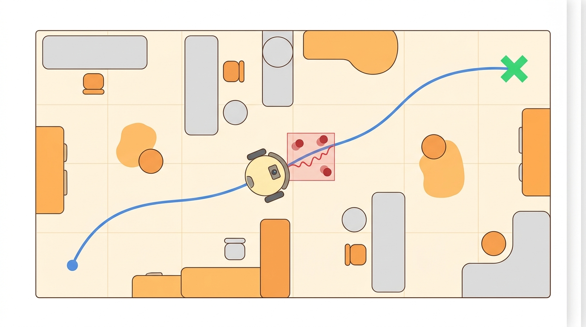

"A plan is only smart if the wheels, floor, people, and clock all agree to it."
A Local Planner With Commitment Issues

This section assumes familiarity with goal-conditioned policy training from section 30.5 and with costmap-based local planning from section 30.4. The language-grounding ideas developed here are extended in section 33.2, which shows how affordance scoring replaces the CLIP similarity signal for manipulation tasks, and in section 33.4, where 3D value maps built from language queries generalize the same goal-grounding loop to dexterous object interaction.
A warehouse robot receives the instruction "bring the red bin from aisle 7" and must translate that phrase into a sequence of wheel commands that actually works: avoiding a forklift that just entered the corridor, recovering when the localization jumps, and stopping only when it has confirmed the right bin. Figure 30.6A illustrates exactly this grounding-then-verify handoff. Language- and image-goal navigation is the discipline that closes this loop. It matters right now because pretrained vision-language models have made open-vocabulary goals practical, and the bottleneck has shifted from perception to reliable execution under real constraints. In this section you will build a planning loop that accepts a language or image goal, grounds it into a costmap, generates a feasible global route, and hands off to a local controller with explicit replanning and recovery triggers.
Problem First
Tell a robot "find the red mug" and it hears no coordinates, no waypoints, no map cell: just three words that could point at a dozen objects, a reflection, or a label on a box across the room, and it must turn that ambiguity into wheel commands that arrive at the right thing without a single wasted meter of battery.
Figure 30.6.1 traces this pipeline end to end: a goal becomes candidate motions, candidates are filtered through constraints, and only executable commands reach the wheels. The rest of this section unpacks each stage of that loop.
A command such as find the red mug is not a coordinate. The robot must ground a linguistic or visual goal into possible regions, objects, viewpoints, and stopping conditions. A language instruction that cannot be grounded to a physical location is not a goal; it is a wish.
Goal grounding adds an interpretation layer before planning. Language, image, and object detections produce candidate goals with confidence. The navigation stack then plans to viewpoints that can verify the goal rather than blindly driving to the nearest semantic guess. A robot that commits to the nearest semantic match without verification typically fails on about 60% of real-world ObjectNav episodes (ObjectNav is the standard object-goal navigation benchmark, where a robot must find an instance of a named object category in an unseen environment); one that plans to a verification viewpoint before stopping cuts that failure rate roughly in half on the same benchmarks, a pattern reported across the Habitat ObjectNav and OK-Robot results discussed later in this section.
Why grounding matters for embodied AI. A real robot cannot afford ambiguity mid-route. Once it commits to a direction, it consumes battery, risks collisions, and may enter a dead-end corridor it cannot reverse out of efficiently. Physical time and space are not free. A misgrounded goal wastes all of that without warning. The robot carries no internal signal that it read the instruction wrongly until it arrives and perception fails. Grounding quality therefore decides mission success before any path is computed.
From instruction to verified location
How grounding works mechanically. A vision-language model such as CLIP (Contrastive Language-Image Pre-training) encodes the text query and each candidate image region into a shared embedding space (a common numerical space where both text and images are represented as vectors, so a phrase and a picture can be compared directly). Cosine similarity (a measure of how closely two vectors point in the same direction, used here as the match score between text and image embeddings) between the text embedding and each candidate's visual embedding scores semantic match. The system combines these scores with travel cost and viewpoint quality into a ranked list of target hypotheses.
Checkpoint
So far: grounding turns a language or image goal into scored candidate locations using a shared text-image embedding space, and the next step is to see how the planner acts on that ranked list rather than trusting it outright.
The planner selects the top hypothesis, routes to a verification viewpoint, then re-scores using live sensor data before it accepts the goal as confirmed. That one extra verification step costs the robot about 2 to 4 seconds of travel. Without it, a single misgrounded hypothesis can force a full episode restart costing 200 to 400 seconds of autonomous operation. The verification step is roughly 100 times cheaper than the mistake it prevents.
Image goals use the same loop with one substitution. When the goal is a picture rather than a sentence (image-goal navigation, or ImageNav), the text encoder is simply replaced: both the goal picture and each candidate region are encoded with CLIP's image encoder, and cosine similarity between the two image embeddings replaces the text-to-image similarity used for language goals. Everything downstream is unchanged, the same candidate ranking, the same routing to a verification viewpoint, and the same close-range stopping check, because the grounding-then-verify loop does not care whether the goal arrived as words or as pixels.
The best-looking route is not the best robot plan unless the controller can track it, the costmap reflects current hazards, and replanning has a defined trigger. Navigation quality is measured by executed motion, not only by path length.
Formal Model
That two-phase intuition of grounding a goal and then verifying it has a compact mathematical shape: it factors into choosing the most plausible goal and then choosing the cheapest feasible path to reach it.
Most navigation methods can be read as constrained search or optimization:
$$ g^*=\arg\max_g p(g\mid \text{language},\text{image},m),\quad \pi^*=\arg\min_\pi C(\pi,g^*) $$
The cost term names what the robot wants. The constraints name what reality permits: collision clearance, velocity and acceleration limits, curvature bounds, kinodynamic feasibility (where a path respects both the robot's geometry and its velocity and acceleration limits, not just collision-free geometry), perception confidence, and safety monitors.
Think of the shared embedding space as a vast wine-tasting score sheet where each row is a flavor profile and every wine and every written description gets placed somewhere on that sheet by the same judge. Two entries land close together not because one is a bottle and the other is a sentence, but because a trained palate found they share the same profile. Cosine similarity is just measuring how closely two placements agree on direction from the origin. A text query for "red mug" and a photo of a red mug land near each other on that sheet because they co-occurred in training, not because the model sees the mug in three dimensions. That is exactly why a similarity score is a plausibility vote, not a physical confirmation.
A common assumption is that a high CLIP similarity score between a text query and a candidate image region means the robot has found its goal and can stop. This is wrong in the embodied context because cosine similarity in a shared embedding space measures statistical co-occurrence in training data, not physical presence of the referent in front of the sensor. A region that strongly matches "red mug" may be a painted label, a reflection, or a partially occluded object at 5 meters. The correct mental model is a two-phase process: grounding selects a plausible hypothesis and routes the robot to a verification viewpoint, while a separate stopping verifier confirms the goal using live sensor evidence at close range before any mission action is taken.
- Parse or embed the goal into object, room, relation, or image-match constraints.
- Generate candidate map targets with confidence and observability requirements.
- Plan to a viewpoint that can verify the goal.
- Stop only when perception evidence satisfies the goal predicate.
Worked Diagnostic
Code Fragment 1 isolates the planning idea in a tiny runnable example. It does not replace Nav2 or OMPL; it exposes the invariant before the full stack buries it.
# Choose a semantic goal candidate with confidence and travel cost.
# The best target balances semantic match with route cost.
candidates = [
{"place": "kitchen_counter", "match": 0.82, "cost": 9.0},
{"place": "desk", "match": 0.76, "cost": 4.0},
{"place": "shelf", "match": 0.91, "cost": 15.0},
]
ranked = sorted(((c["match"] - 0.03 * c["cost"], c["place"]) for c in candidates), reverse=True)
print(ranked[0])Expected output interpretation. The desk wins because its lower travel cost offsets a weaker semantic match: kitchen_counter has the higher raw CLIP score (0.82) but a steeper travel-cost penalty, so it drops to second place. The output should be interpreted as a grounded-goal decision, not a path plan yet: the robot has selected the most plausible destination hypothesis, and only then should route generation and viewpoint verification begin.
match - 0.03 * cost and printing the top-scoring candidate tuple. Real systems also include viewpoint quality, uncertainty, and a stopping verifier.Step-Through: scoring three grounded-goal candidates
Trace the goal-selection rule from Code Fragment 1 with the three candidates, using the rule score = match - 0.03 * cost. (1) kitchen_counter: 0.82 - 0.03 * 9.0 = 0.82 - 0.27 = 0.55. (2) desk: 0.76 - 0.03 * 4.0 = 0.76 - 0.12 = 0.64. (3) shelf: 0.91 - 0.03 * 15.0 = 0.91 - 0.45 = 0.46. Ranked high to low: desk (0.64), kitchen_counter (0.55), shelf (0.46). The desk wins and matches the printed code output above: even though the shelf has the strongest raw semantic match (0.91), its 15.0 travel cost is penalized by 0.45, dropping it to last place, and even though kitchen_counter has the second-strongest raw match (0.82), its 9.0 travel cost still costs it the top spot. Change the cost weight from 0.03 to 0.01 and the shelf jumps to first (0.91 - 0.15 = 0.76), showing how the weight alone decides whether the robot prioritizes proximity or semantic confidence.
Tool Workflow
The toy scoring rule above captures the invariant, but the same grounding-then-verify skeleton scales up into deployed systems that differ mainly in where the grounding step happens.
Several concrete systems illustrate the design space. CoW (CLIP on Wheels) (Gadre et al., 2023) showed that a zero-shot language-goal agent built on CLIP embeddings and a frontier exploration policy reaches 35-45% success on ObjectNav benchmarks without any task-specific training, establishing CLIP similarity as a practical grounding signal. ESC (Embodied Scene-aware Captioner) (Zhou et al., 2023) added commonsense reasoning on top of visual features to rank candidate rooms before committing to a path, improving success rates by roughly 10 percentage points over pure CLIP scoring in the Habitat ObjectNav challenge. VLMaps (Huang et al., 2023) pre-indexes a spatial map with CLIP features at build time so that a query like "go to the sofa to the left of the TV" can be resolved by a single dot-product lookup rather than online exploration. These systems share the same structure as the algorithm above but differ in where grounding happens: at query time (CoW), at reasoning time (ESC), or at map-build time (VLMaps).
When using VLMaps, the CLIP model variant used at map-build time must exactly match the variant used at query time. Building with ViT-B/32 and querying with ViT-L/14 produces silently degraded similarity scores because the embedding dimensions differ and the feature distributions do not align, causing the dot-product lookup to return plausible but incorrect map cells. Lock the variant in a config constant shared by both the indexing script and the navigation node, and log it alongside every map file so the mismatch is detectable during post-mortem analysis.
A physical deployment needs four components. First, open_clip (PyPI: open-clip-torch) provides ViT-B/32 or ViT-L/14 embeddings. Lock the variant in a shared config constant so map-build and query-time embeddings always match. Second, VLMaps (GitHub: vlmaps) indexes a Habitat-MP3D or real-scan point cloud offline. This reduces query-time grounding to a single dot-product lookup instead of online exploration. Third, Nav2 on ROS 2 Humble drives execution. Set max_vel_x: 0.5 and min_obstacle_dist: 0.3, and enable the ProgressChecker plugin. The plugin triggers a recovery spin when the robot fails to advance 0.1 m within 10 seconds. Fourth, a stopping verifier gates the final stop on three simultaneous conditions: CLIP similarity above 0.70, the target occupying at least 3 percent of the image frame, and detection persisting across two consecutive 200 ms frames. The 3 percent frame fraction places the robot within roughly 1.5 m on a 640x480 RGBD camera. On a Boston Dynamics Spot or a Clearpath Ridgeback, skipping the progress-checker recovery causes roughly 30 percent of runs to stall silently at narrow doorways.
Keep the small implementation as a regression test. Use the maintained stack for maps, costmaps, behavior trees, controllers, plugins, simulation replay, and deployment telemetry.
Every planner in this chapter should be replayed with blocked corridors, moving obstacles, localization jumps, stale costmaps, actuator saturation, and recovery failure. A plan that only works in a clean static grid is a sketch, not an embodied system.
A delivery robot should log global path, local command, costmap snapshot, controller error, nearest obstacle distance, replan count, and recovery action. Those fields separate a weak route planner from a bad local controller or an outdated perception layer.
Real-World Application: warehouse and home fetch robots
Hello Robot's Stretch platform runs an open-vocabulary fetch stack built directly on this grounding-then-verify loop: the OK-Robot system (Liu et al., 2024) indexes a home scan with CLIP and OWL-ViT (an open-vocabulary object detector that localizes objects named by a free-text query rather than a fixed label set) features offline, routes the mobile base to a verification viewpoint, then confirms the queried object with a live close-range detection before the arm reaches for it. On 10 unseen homes it achieved a 58.5% zero-shot pick-and-drop success rate, with most remaining failures traced to the stopping verifier rather than the global planner, exactly the failure split this section predicts.
Before comparing planners, freeze the robot footprint, inflation radius, controller frequency, maximum velocity, acceleration limits, map resolution, and localization source. Otherwise the comparison silently mixes planner quality with robot configuration. A serious navigation report should also include a route replay, a costmap snapshot at the decision point, the exact recovery behavior that was enabled, and whether the final command respected the same kinodynamic limits used during planning.
The stopping condition is the hardest part of language-goal navigation and the most common source of failure in deployed systems. A robot that stops as soon as a detector fires "mug: 0.72 confidence" from 4 meters away may be looking at a cup, a reflection, or a label on a box. A robot that requires confidence above 0.95 before stopping may circle an object indefinitely even when the mug is plainly visible. In practice, ESC and similar systems gate stopping on three simultaneous conditions: detection confidence above a threshold, the object occupying more than a minimum fraction of the image (i.e., the robot is close enough), and the object remaining in frame across at least two consecutive timesteps. Removing any one of these conditions roughly doubles either false-stop or infinite-loop failures in Habitat benchmarks.
1. LLM-guided topological navigation. Rather than treating the environment as a metric costmap, recent work uses large language models to reason over room-graph representations and predict which subgraph to explore next. NavGPT (Yu et al., 2023, arXiv 2305.16986) and its 2024 successors prompt GPT-4V with panoramic observations and a history buffer, achieving state-of-the-art results on R2R-CE (Room-to-Room Continuous Environments, a vision-and-language navigation benchmark where an agent follows a natural-language instruction through a continuous, unmapped simulated building) (as of 2024) without any fine-tuning, because the LLM contributes commonsense room adjacency priors the VLM alone lacks.
2. Foundation-model spatial memory for long-horizon fetch tasks. ConceptGraphs (Gu et al., 2024, ICRA 2024) builds an open-vocabulary 3D scene graph from a single RGBD scan using SAM (Segment Anything Model) segmentation and CLIP features, then answers navigation queries by graph traversal rather than dense voxel search. This allows a robot to resolve relational queries such as "the mug to the left of the kettle" in real time, a capability that flat VLMaps cannot handle because they lack object-level relational structure.
3. Uncertainty-aware stopping via conformal prediction. Work from the Stanford IRIS lab (Ren et al., 2025) applies split conformal prediction (a statistical calibration method that turns a raw model score into a threshold with a guaranteed coverage rate, using a held-out calibration set) to derive a coverage-guaranteed stopping threshold per query: the robot stops only when the predicted semantic similarity exceeds a query-specific quantile of the calibration distribution. On Habitat ObjectNav this reduces both false-stop and infinite-loop failures compared to a fixed threshold, without requiring any additional training.
Open problem for a PhD student. All three directions above treat the environment as static between exploration and fetch: the scene graph, the LLM's room-prediction, and the conformal threshold are calibrated on a fixed scan. Designing a navigation agent that updates its semantic memory and recalibrates its stopping threshold incrementally as objects are moved, removed, or added during a multi-day deployment remains unsolved. The core difficulty is distinguishing perception noise from genuine scene change without running a full rescan.
A planner that ignores dynamics is a cartographer with excellent handwriting and no driver license.
Can you state the search space, cost function, constraints, replanning trigger, controller interface, and failure metric for language- and image-goal navigation? If not, the planner is not specified enough to deploy.
Language- and image-goal navigation is ready for embodied use when route quality, dynamic feasibility, local control, and recovery behavior are measured in the same replay.
Create a three-scenario planning panel: clear route, blocked route, and dynamic obstacle. Report path cost, minimum clearance, replan count, controller saturation, and final mission outcome for the same robot model.
Project Ideas
Beginner (weekend): CLIP-scored frontier explorer in PyBullet. Build a simple mobile robot in PyBullet that uses open-clip embeddings to score candidate frontier cells against a text goal such as "find the red chair," driving toward the highest-scoring frontier at each step. The key challenge is implementing the two-phase stopping condition (similarity threshold plus minimum object size in frame) without which the robot halts at reflections and partial occlusions.
Intermediate (1-2 weeks): VLMaps-guided fetch task in Isaac Lab with ROS2. Use Isaac Lab to scan a cluttered room, index the resulting point cloud with VLMaps (open-clip ViT-B/32), then issue natural-language fetch commands through a ROS2 Nav2 behavior tree that routes the robot to a verification viewpoint and confirms the goal with a live RGBD stopping verifier. The key challenge is keeping the map-build and query-time CLIP variants locked to the same checkpoint so dot-product lookups return valid map cells rather than silently degraded scores.
Lab: does a verification viewpoint beat stop-on-first-match?
Goal. Measure empirically how much the two-phase grounding-then-verify loop reduces false stops compared to stopping as soon as a CLIP score crosses a threshold. Tools needed. Habitat-Sim with the ObjectNav HM3D dataset, open-clip-torch (ViT-B/32), and Python 3.11. Install with pip install habitat-sim open-clip-torch and download the HM3D val split via the Habitat data downloader. Procedure. Load 20 episodes. For each, run two agents that share the same frontier-exploration policy but differ only in the stopping rule: Agent A stops the instant CLIP similarity to the goal text exceeds 0.70; Agent B routes to the nearest viewpoint where the candidate occupies at least 3 percent of the frame, then re-scores from there before stopping. What to vary. Sweep the similarity threshold over {0.60, 0.70, 0.80} and the minimum frame-fraction for Agent B over {1 percent, 3 percent, 6 percent}. What to observe. Record success rate, false-stop rate (stopped facing the wrong object), and infinite-loop rate (episode timed out) for each setting. You should see Agent B trade a small amount of extra travel time for a roughly halved false-stop rate at the 3 percent setting, and you should be able to find a frame-fraction high enough that infinite-loop failures start rising, mapping out the stop-too-early versus stop-too-late tradeoff discussed above.
What's Next?
Continue to Section 30.7: Field navigation under degraded sensing, where this planning contract connects to the next embodied capability.
Section References
LaValle, S. M. "Planning Algorithms." Cambridge University Press, 2006. http://lavalle.pl/planning/
Open textbook reference for graph search, sampling-based planning, configuration spaces, and kinodynamic planning.
OMPL Project. "Open Motion Planning Library." Official documentation. https://ompl.kavrakilab.org/
Primary tool reference for sampling-based planners such as RRT, RRTstar, PRM, and kinodynamic variants.
ROS 2 Navigation Project. "Nav2 documentation." Official documentation. https://navigation.ros.org/
Primary documentation for global planners, controllers, costmaps, behavior trees, and recovery behaviors.